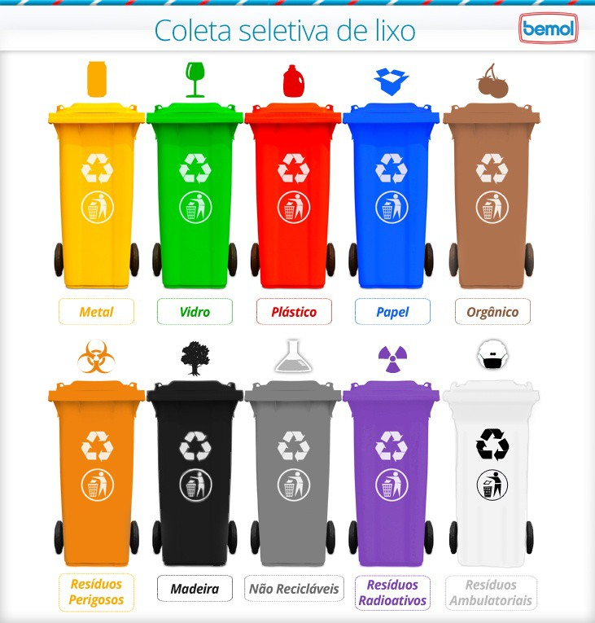
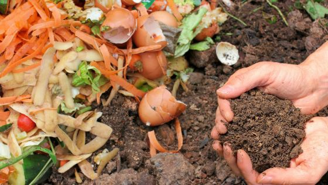

Tudo sobre Lixo
Pensar nos impactos do lixo do campo à cidade nos convida a uma reflexão profunda sobre a gestão de resíduos em diferentes contextos geográficos. Ao analisarmos o ciclo do lixo desde as áreas rurais até as urbanas, deparamo-nos com uma variedade de desafios e implicações que vão além do simples descarte de materiais.
Nas zonas rurais, onde a produção agrícola e pecuária é predominante, o manejo inadequado do lixo pode resultar em contaminação do solo e da água, impactando diretamente a saúde dos agricultores, dos animais e a qualidade dos alimentos produzidos. Além disso, resíduos orgânicos mal gerenciados podem gerar poluição e contribuir para a propagação de doenças.
Já nas áreas urbanas, o acúmulo desordenado de lixo nas ruas e aterros sanitários sobrecarregados representam sérios problemas ambientais e sociais. A poluição visual e olfativa, a proliferação de vetores de doenças e a liberação de gases tóxicos provenientes da decomposição dos resíduos são apenas algumas das consequências negativas que afetam diretamente a qualidade de vida dos cidadãos.
Diante desse panorama complexo, torna-se fundamental adotar práticas sustentáveis de gestão de resíduos em todas as etapas do processo, desde a redução na fonte até a reciclagem e reutilização dos materiais. Educação ambiental, incentivo à compostagem, coleta seletiva eficiente e políticas públicas voltadas para o gerenciamento adequado do lixo são essenciais para minimizar os impactos negativos e promover um ambiente mais saudável e equilibrado para as presentes e futuras gerações.
Lixo Orgânico e Inorgânico
Vamos explorar os diferentes tipos de lixo além do orgânico e inorgânico, abordando suas características, impactos ambientais e formas de gerenciamento:
Lixo Orgânico:
O lixo orgânico é composto por resíduos de origem biológica, como restos de alimentos, cascas de frutas, folhas, papel sujo, entre outros materiais degradáveis. Esses resíduos são facilmente decompostos por microorganismos no processo de compostagem, transformando-se em adubo orgânico rico em nutrientes para o solo. A decomposição do lixo orgânico gera gases como metano e dióxido de carbono, que podem contribuir para o aquecimento global se não forem adequadamente tratados.
Impacto Ambiental do Lixo Orgânico:
O descarte inadequado do lixo orgânico em aterros sanitários contribui significativamente para a produção de gases de efeito estufa e contaminação do solo e da água. Além disso, o desperdício de alimentos, que representa uma parte significativa do lixo orgânico gerado, tem um impacto direto na segurança alimentar e no uso sustentável dos recursos naturais.
Gerenciamento do Lixo Orgânico:
Para reduzir o impacto ambiental do lixo orgânico, é essencial adotar práticas sustentáveis de gerenciamento. A compostagem doméstica ou comunitária é uma forma eficaz de valorizar os resíduos orgânicos, transformando-os em adubo para jardins e hortas. Além disso, a coleta seletiva e a destinação correta dos resíduos orgânicos para usinas de compostagem contribuem para a redução da quantidade de resíduos enviados para aterros sanitários.
Lixo Inorgânico:
Por outro lado, o lixo inorgânico é composto por materiais não biodegradáveis, como plásticos, metais, vidros e papéis recicláveis. Esses materiais podem permanecer no meio ambiente por longos períodos sem se decompor naturalmente. O descarte inadequado do lixo inorgânico gera poluição visual, contaminação do solo e dos recursos hídricos, além de representar uma fonte significativa de desperdício de recursos naturais.
Impacto Ambiental do Lixo Inorgânico:
A produção excessiva de lixo inorgânico e a baixa taxa de reciclagem contribuem para a escassez de matérias-primas virgens, o esgotamento dos recursos naturais e a poluição ambiental. Muitos materiais inorgânicos descartados incorretamente acabam nos oceanos, causando danos à vida marinha e aos ecossistemas costeiros.
Gerenciamento do Lixo Inorgânico:
Para mitigar os impactos negativos do lixo inorgânico, é fundamental promover a redução na geração de resíduos, a reutilização de materiais e a reciclagem eficiente. A separação adequada dos materiais recicláveis na fonte, a coleta seletiva e o incentivo à economia circular são estratégias-chave para maximizar a recuperação de recursos valiosos presentes no lixo inorgânico.
Outros Tipos de Lixo
Vamos explorar os diferentes tipos de lixo além do orgânico e inorgânico, abordando suas características, impactos ambientais e formas de gerenciamento:
1. Lixo Reciclável:
O lixo reciclável é composto por materiais como papel, papelão, plástico, vidro e metais que podem ser transformados em novos produtos por meio da reciclagem. A separação correta dos resíduos recicláveis na fonte é essencial para facilitar o processo de reciclagem e reduzir a quantidade de resíduos enviados para aterros sanitários. A reciclagem contribui para a conservação de recursos naturais, economia de energia e redução da emissão de gases de efeito estufa.
2. Lixo Eletrônico (e-lixo):
O lixo eletrônico é constituído por equipamentos eletrônicos descartados, como celulares, computadores, TVs e baterias. Esses resíduos contêm substâncias tóxicas e metais pesados que podem contaminar o solo e a água se não forem descartados adequadamente. O descarte correto do lixo eletrônico envolve a coleta seletiva, a desmontagem segura dos equipamentos e a destinação para empresas especializadas em reciclagem de eletrônicos.
3. Lixo Hospitalar:
O lixo hospitalar inclui resíduos gerados em hospitais, clínicas e laboratórios, como seringas, luvas, medicamentos vencidos e materiais infectantes. Devido ao risco de contaminação biológica, o gerenciamento adequado do lixo hospitalar é fundamental para proteger a saúde pública e o meio ambiente. A segregação dos resíduos conforme sua classificação (infectante, perfurocortante, químico) e o uso de técnicas de tratamento específicas garantem a eliminação segura desses resíduos.
4. Lixo Tóxico ou Perigoso:
O lixo tóxico é composto por substâncias químicas perigosas, como pesticidas, produtos químicos industriais, pilhas e baterias. Esses resíduos representam um sério risco à saúde humana e ambiental se forem descartados de forma inadequada. O manejo seguro do lixo tóxico envolve o armazenamento correto, o transporte especializado e a destinação final em locais adequados, como aterros industriais ou incineradores controlados.
5. Lixo Radioativo:
O lixo radioativo é originado principalmente pela indústria nuclear, hospitais e pesquisas científicas que utilizam materiais radioativos. Esse tipo de resíduo apresenta altos níveis de radiação nociva que podem causar danos à saúde humana e ao meio ambiente se não forem manuseados com extrema precaução. O armazenamento seguro do lixo radioativo em depósitos subterrâneos profundos é essencial para evitar a contaminação radioativa.
A correta gestão dos diferentes tipos de resíduos é fundamental para minimizar os impactos negativos no meio ambiente e na saúde pública. A conscientização da população sobre a importância da redução, reutilização, reciclagem e descarte adequado dos resíduos é essencial para promover uma cultura sustentável.
Como Reciclar
Reciclar é uma prática fundamental para a preservação do meio ambiente e a promoção da sustentabilidade. Vamos explorar detalhadamente o processo de reciclagem, seus benefícios e algumas dicas práticas para reciclar de forma eficiente:
1. O Processo de Reciclagem:
A reciclagem é um processo que transforma resíduos descartados em novos produtos, reduzindo a necessidade de extrair matérias-primas virgens da natureza. O ciclo de reciclagem geralmente envolve as seguintes etapas:
- Coleta: Os materiais recicláveis são coletados por meio da coleta seletiva, que pode ser feita por cooperativas, empresas especializadas ou pelos serviços públicos de limpeza urbana.
- Triagem: Os materiais são separados conforme sua composição (papel, plástico, vidro, metal) para facilitar o processo de reciclagem.
- Processamento: Os materiais são processados e transformados em matéria-prima secundária que será utilizada na fabricação de novos produtos.
- Fabricação: A matéria-prima reciclada é incorporada na produção de novos itens, fechando o ciclo de reciclagem.
2. Benefícios da Reciclagem:
- Redução do consumo de recursos naturais: Ao reciclar materiais como papel, plástico e metal, evita-se a extração excessiva de matérias-primas da natureza.
- Economia de energia: A reciclagem consome menos energia do que a produção a partir de matéria-prima virgem, contribuindo para a redução das emissões de gases de efeito estufa.
- Diminuição da quantidade de resíduos enviados para aterros sanitários: A reciclagem ajuda a reduzir a quantidade de lixo destinado aos aterros, prolongando a vida útil desses locais.
- Geração de empregos e renda: A cadeia produtiva da reciclagem gera empregos em diferentes setores, como coleta, triagem e processamento dos materiais recicláveis.
3. Dicas Práticas para Reciclar:
- Separe corretamente os materiais recicláveis em casa ou no trabalho, utilizando recipientes específicos para papel, plástico, vidro e metal.
- Lave e seque os materiais antes de descartá-los para evitar contaminação por resíduos orgânicos.
- Consulte os pontos de coleta seletiva mais próximos da sua região ou participe de programas de coleta seletiva comunitária.
- Incentive a conscientização sobre a importância da reciclagem entre familiares, amigos e colegas.
A prática da reciclagem é uma atitude simples e poderosa que cada um de nós pode adotar no dia a dia para contribuir com um planeta mais sustentável.
Compoastagem
A compostagem é uma prática sustentável e eficaz para reduzir resíduos orgânicos, enriquecer o solo e promover a saúde das plantas. Vamos explorar mais detalhadamente o processo de compostagem, seus benefícios e algumas dicas úteis para começar a compostar em casa:
1. O Processo de Compostagem:
A compostagem é um processo natural de decomposição de resíduos orgânicos, como restos de alimentos, folhas, cascas de frutas e legumes, em um composto rico em nutrientes chamado de "húmus". Esse processo é realizado por microorganismos como bactérias, fungos e minhocas e pode ser dividido em três fases principais:
- Fase inicial: Nesta etapa, os resíduos orgânicos são depositados em uma pilha ou recipiente apropriado, onde ocorre a decomposição inicial dos materiais.
- Fase de decomposição: Os microorganismos presentes no composto começam a quebrar os resíduos em substâncias mais simples, liberando calor e dióxido de carbono.
- Fase de maturação: Nesta fase final, o composto se estabiliza e se transforma em húmus, um material escuro, leve e rico em nutrientes essenciais para as plantas.
2. Benefícios da Compostagem:
- Redução de resíduos enviados para aterros sanitários: A compostagem permite reduzir a quantidade de resíduos orgânicos descartados, contribuindo para a diminuição do impacto ambiental.
- Melhoria da qualidade do solo: O húmus produzido na compostagem ajuda a melhorar a estrutura do solo, aumentando sua capacidade de retenção de água e nutrientes.
- Estímulo ao cultivo de plantas saudáveis: O composto resultante da compostagem fornece nutrientes essenciais às plantas, promovendo seu crescimento e resistência a doenças.
- Contribuição para a redução das emissões de gases de efeito estufa: A compostagem evita a decomposição anaeróbica dos resíduos orgânicos, que produz metano, um potente gás causador do efeito estufa.
3. Dicas Práticas para Compostar em Casa:
- Escolha um local adequado para montar sua composteira, preferencialmente em um local sombreado e com boa circulação de ar.
- Separe os resíduos orgânicos dos resíduos não compostáveis, como plásticos e metais.
- Equilibre os materiais úmidos (restos de alimentos) com materiais secos (folhas secas, serragem), mantendo a umidade adequada na pilha.
- Aerador ocasionalmente o composto para garantir a entrada de oxigênio no processo.
A prática da compostagem é uma maneira simples e eficaz de transformar resíduos orgânicos em recursos valiosos para o solo e as plantas
Centros de Coleta
Os centros de coleta de lixo desempenham um papel fundamental na gestão adequada dos resíduos sólidos, contribuindo para a preservação do meio ambiente e a promoção da sustentabilidade. No Brasil, existem diversos tipos de centros de coleta de lixo, cada um com suas características e finalidades específicas. Vamos explorar alguns dos principais centros de coleta de lixo no Brasil e sua importância:
1. Aterros Sanitários:
Os aterros sanitários são locais projetados para receber e tratar os resíduos sólidos urbanos de forma adequada, minimizando os impactos ambientais negativos. No Brasil, os aterros sanitários são regulamentados pela Política Nacional de Resíduos Sólidos e devem atender a critérios específicos para garantir a proteção do meio ambiente e da saúde pública.
Alguns dos principais aterros sanitários no Brasil incluem o Aterro Sanitário de Gramacho, localizado no Rio de Janeiro, e o Aterro Sanitário de São João da Barra, no estado do Rio de Janeiro.
2. Centros de Triagem:
Os centros de triagem são locais onde os resíduos sólidos são separados, classificados e encaminhados para reciclagem ou destinação final adequada. Esses centros desempenham um papel crucial na promoção da reciclagem e na redução da quantidade de resíduos enviados para aterros sanitários.
No Brasil, existem diversos centros de triagem espalhados pelo país, como o Centro de Triagem da Comcap em Florianópolis e o Centro de Triagem da Reciclagem em São Paulo.
3. Pontos de Entrega Voluntária (PEVs):
Os Pontos de Entrega Voluntária são locais onde os cidadãos podem descartar diferentes tipos de resíduos recicláveis, como papel, plástico, vidro e metal. Esses pontos facilitam a coleta seletiva e incentivam a população a adotar práticas sustentáveis de descarte de resíduos.
No Brasil, os PEVs estão presentes em diversas cidades, com destaque para o programa "Recicla Porto Alegre", que disponibiliza diversos pontos de entrega voluntária na capital gaúcha.
A gestão adequada dos resíduos sólidos é essencial para garantir a qualidade ambiental e promover o desenvolvimento sustentável. Os centros de coleta de lixo desempenham um papel fundamental nesse processo, contribuindo para a redução da poluição e o aproveitamento dos recursos naturais. Entenda mais sobre a gestão de resíduos sólidos vizualizando o mapa